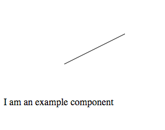

Dependencies
You'll often want to lean on other libraries like jQuery or lodash to make your life easier.
Let's go ahead and add paper.js as a dependency:
npm install paper --save
This will add it to our package.json file, so it will be included whenever we install the component.
Next, we need to update our gulpfile.config.js, find the distribution in our node module library, and add the dependency so it gets bundled into our component.
// libs that MUST be included in a consuming app for this component to work
this.deps = [
'node_modules/base-component/dist/base-component.bundle.js',
'node_modules/paper/dist/paper-full.min.js'
];
(We are using the full, compiled version of paper.js.)
Finally, let's test it out in the examples demo. If we include the bundled code, and add some paper.js test code in the <body> tag of the index.html file and refresh the page:
<head>
...
<script src="js/svg-draw-component.bundle.js"></script>
...
</head>
...
<script type="text/paperscript" canvas="myCanvas">
var path = new Path();
path.strokeColor = 'black';
var start = new Point(100, 100);
path.moveTo(start);
path.lineTo(start + [ 100, -50 ]);
</script>
<canvas id="myCanvas" resize></canvas>
...
You should see a diagonal line drawn on the screen that looks like this:
